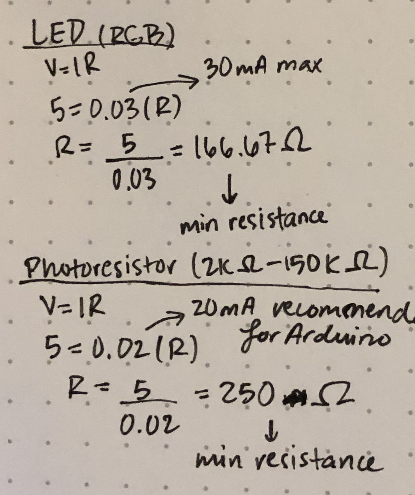
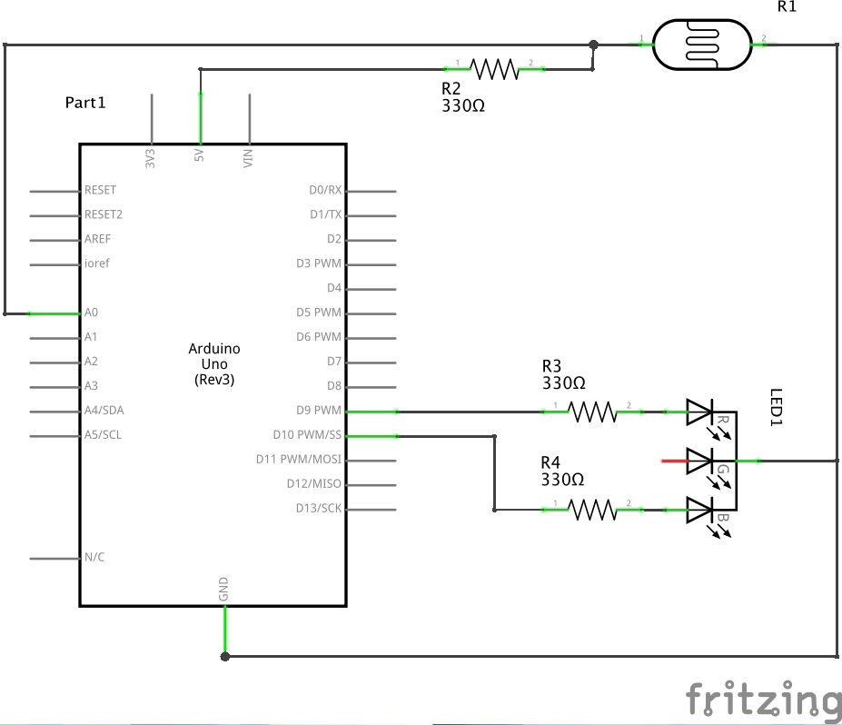

Arsh's Assignment 3!
Circuit in operation

When the photoresistor detects light, the RGB LED turns red, and when the photoresistor detects darkness, the RGB LED turns blue.
Calculations

These are my calculations for the minimum resistance required for the LED and photoresistor. I used 330Ω resistors to keep the amount of current flowing through the circuit to a safe level.
Schematic

Circuit

Code Snippet
const int analogInPin = A0; // analog input pin that the photoresistor is attached to
const int rPin = 10; // analog input pin that the red from the RGB LED is connected to
const int bPin = 9; // analog input pin that the blue from the RGB LED is connected to
int sensorValue = 0; // value read from the photoresistor
int outputValue = 0; // value output to the PWM (analog out)
void setup() {
Serial.begin(9600); // initialize serial communications at 9600 bps
pinMode(analogInPin, INPUT); // set analog in pin as an input
pinMode(rPin, OUTPUT); // set red pin as an output
pinMode(bPin, OUTPUT); // set blue pin as an output
}
void loop() {
sensorValue = analogRead(analogInPin); // read analog in value
outputValue = map(sensorValue, 0, 2000, 0, 255); // map it to the range of the analog out
if (sensorValue < 1000) { // if the sensor value is below 500, turn the LED red
analogWrite(rPin, outputValue); // map red pin to the output
analogWrite(bPin, 0); // set the blue pin to 0
Serial.println("It is red!"); // print "It is red!" to the serial monitor
}
if (sensorValue > 1000) { // otherwise, turn the LED blue
analogWrite(bPin, outputValue); // map blue pin to the output
analogWrite(rPin, 0); // set the red pin to 0
Serial.println("It is blue!"); // print "It is blue!" to the serial monitor
}
// wait 2 milliseconds before the next loop for the analog-to-digital
// converter to settle after the last reading:
delay(2);
}